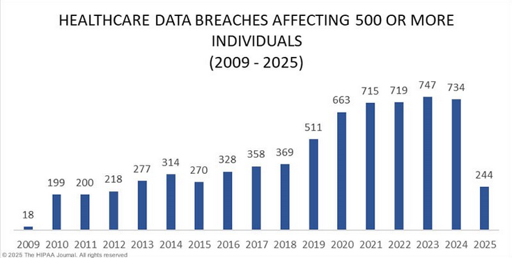

Electronic medical records, and their impact on efficiency and privacy.
Risks
Medical practices have altered the traditional paper method of handling medical information of patients into a digitised, efficient method of an electronic medical record (EMR) platform. The new systems in place provide instant access to information required, higher efficiency, and less traditional paper errors, but at what cost? (Alder, 2025) states that in 2024, there were 734 healthcare data breaches affecting 500 or more individuals reported to the Office for Civil Rights (OCR), which in total equates to 276,775,457 individuals having their protected health information exposed or stolen. With this data, I am curious to see what risks electronic medical records pose on patient security and privacy, how it can negatively impact efficiency of healthcare professionals, and what we can do to solve it.
Privacy Risks
Even though electronic medical records (EMRs) are a great tool for medical professionals to access patient information, they also introduce serious privacy concerns. The raw amount of data stored online makes EMRs a serious target for cyberattacks. Just in 2024 alone, 276 million individuals were negatively affected by data breaches, with the largest breach being at Change Healthcare, leaving 190 million people with their records exposed from a single incident (Alder, 2025). These events signify the danger of hacking and ransomware attacks on the healthcare industry, which accounted for 80% of data breaches in 2023 (Alder, 2025). Figure 1 (Alder, 2025) is showing the impact of healthcare data breaches over the years, with 244 breaches already occurring in 2025. Breaches of patient information made by attackers not only compromise protected health information (PHI) but also cause a loss of trust between the public and digital healthcare systems.

Cyber threats are not the only privacy breaches that plague the digital healthcare system, as internal vulnerabilities still exist. For example, some EMR vendors have sold deidentified data of patients to third parties such as pharmaceutical companies, even though there is evidence that the data is able to be reidentified through the use of external sources (Sittig & Singh, 2011). On top of that, third party applications and mobile devices that clinicians use to access patient records can be classed as weak entry points for unauthorized access (Basil, Ambe, Ekhator, & Fonkem, 2022). These privacy concerns are exaggerated by the ethical dilemma of patient opt out provisions, which leaves many providers in a complex situation, as they are unprepared to support separate systems and it can be quite costly (Sittig & Singh, 2011).
Efficiency and Usability Challenges
Even though electronic medical records (EMRs) were introduced to improve healthcare efficiency, they have also created unintended obstacles. A significant issue on the healthcare industry is information overload. The sheer amount of irrelevant or poorly displayed information within EMRs has increased the strain on physicians and has been linked to be the cause of higher error rates (Nijor, Rallis, Lad, & Gokcen, 2022). A study found that there are promising results when comparing the completion time and error rate of physicians using a streamlined EMR system with using a conventional EMR system. With the streamlined interface and only necessary data, it was shown to have significant decreases in errors and completion time was cut in half (Nijor et al., 2022).
Another efficiency concern is physician burnout. Inefficient interfaces have caused medical practitioners to spend approximately twice as much time on documenting patient information compared to the time interacting with patients themselves (Honavar, 2020). During a 10-hour shift, the average emergency room physician performs over 4,000 mouse clicks, which contributes to reduced care quality of the patients and physician fatigue (Honavar, 2020). To add to that, alerts that are meant to ensure patient safety, often result in “alert fatigue” where clinicians disregard important warnings due to their frequency. This can be seen in a survey conducted of 2590 primary care physicians, where 69.9% responded with receiving more information than they could manage (Nijor et al., 2022).
Solutions and Mitigations
Technical and policy-level solutions are needed in order to mitigate the privacy and efficiency issues of electronic medical records (EMRs). Looking at the technical side, safeguards can be implemented, such as access control through usernames and passwords, encryption, and firewalls (Basil et al., 2022). Another part that plays a crucial role in minimizing threats are administrative safeguards such as IT audits, Security Officer roles, and proper training of staff (Basil et al., 2022).
Recommendations have been made by researchers for customizable electronic medical record interfaces that focus on important clinical data only, which can help mitigate the issue of information overload (Nijor et al., 2022). It has also been seen that concise data presentation in the form of systems such as AWARE (Ambient Warning and Response Evaluation) significantly reduces error rates and contributes to efficient decision-making (Nijor et al., 2022). Changing clinical note formats to a more effective structure such as APSO (Assessment, Plan, Subjective, Objective) has also been seen to have a positive impact on cognitive load and was commended by physicians for its ease of use (Nijor et al., 2022). The healthcare industry should also communicate openly with EMR vendors, clinicians, and policymakers to make sure their designs are safe and effective (Sittig & Singh, 2011).
In conclusion, although electronic medical records (EMRs) have drastically advanced the healthcare industry, they have also introduced several serious risks that cannot be disregarded. Patient trust suffers significantly in the presence of data breaches, specifically cyberattacks or unethical data sharing, which is a key part of the healthcare industry. On top of that, systems designed poorly add to the information overload within electronic medical records and physician burnout. However, these issues can be mitigated by the active presence of healthcare professionals, optimized system design, and improved security practices. If controlled properly, EMRs can pose significant benefits to patient rights and efficiency of physicians, ensuring that the new technology introduced positively develops modern medicine.